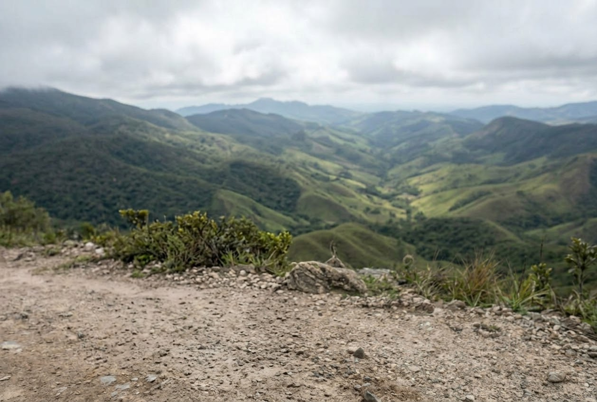
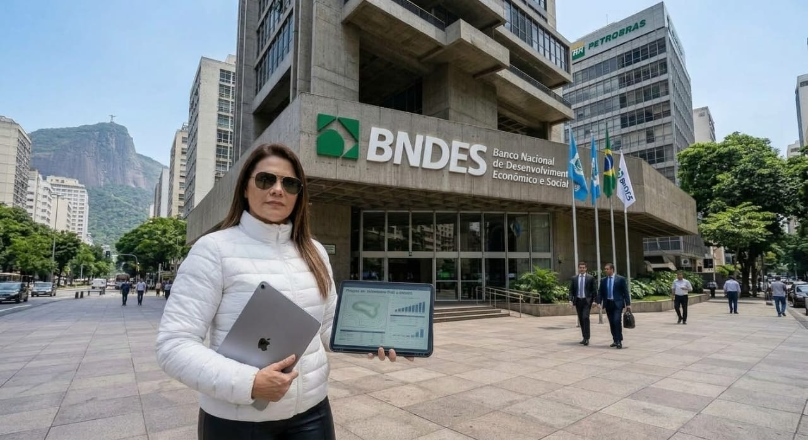
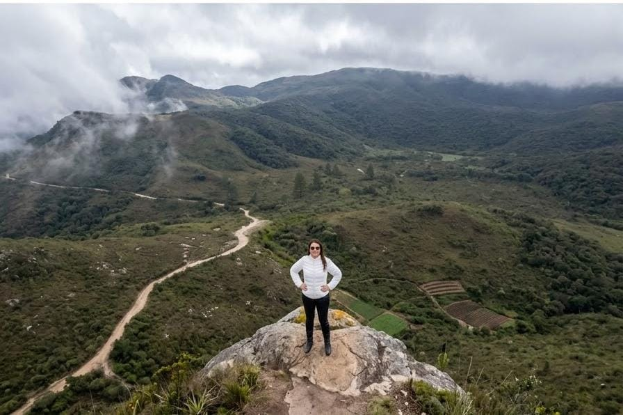

☗
Crédito Rural
Custeio, investimento e comercialização conforme o projeto.

AGROBANCK
Assistência técnica e extensão rural, projetos, consultoria e soluções financeiras para produtores, agroindústrias e empresas.
PROJETO EM DESTAQUE
Transforme uma ideia ou expansão em um projeto estruturado, com análise dos números, cenários e capacidade financeira.

NOSSAS SOLUÇÕES
Uma estrutura para acompanhar o cliente desde o planejamento até a execução do projeto.
Custeio, investimento e comercialização conforme o projeto.
Estruturação para expansão, modernização e produtividade.
Capital e planejamento para crescimento do negócio.
Planejamento técnico e financeiro para decisões mais seguras.
Suporte especializado para o campo e para a gestão.
Informação e precisão para regularização e projetos.
Regularize sua propriedade rural juridicamente. Com isso facilite as linhas de crédito.
Reduza drasticamente os custos operacionais de energia. Conquiste autonomia para sistemas de irragação e estruturas.
Garantimento de água na quantidade certa para sua cultura.
Modernize sua frota com tecnologia de ponta. Adquira tratores e colheitadeiras com prazs ideais.
Neutralize a acidez da terra e otimize nutrientes.
Transforme a infraestrutura da sua área rural. Valorize a terra com acessos, cercas e construções eficientes.
Tire seu négocio do papel a partir do zero. Planejamento técnico completo da terra bruta até o plantio.
PARA QUEM ATENDEMOS
Atendemos diferentes perfis do agronegócio, respeitando o momento e o objetivo de cada projeto.
Soluções completas e suporte técnico-financeiro para pequeno, médio e grande produtor.
Linhas de crédito disponíveis:Crédito e planejamento focado na criação, manejo e melhoria da infraestrutura pecuária.
Linhas de crédito disponíveis:Financiamentos estratégicos para safra, ampliação de produtividade e maquinários.
Linhas de crédito disponíveis:Estruturação financeira para transformação, industrialização e expansão de capacidade.
Linhas de crédito disponíveis:Capital de giro, aquisições corporativas e projetos de expansão do negócio.
Linhas de crédito disponíveis:Suporte completo para implantação de novas estruturas e grandes empreendimentos.
Linhas de crédito disponíveis:
SOBRE A AGROBANCK
A AgroBanck une assistência técnica, extensão rural, consultoria e estruturação financeira para apoiar decisões que precisam fazer sentido na prática.
LINHAS E PROJETOS
Estruturamos a necessidade do cliente e organizamos as informações para que o projeto tenha clareza, coerência e documentação adequada.
SIMULADOR / PRIMEIRO CONTATO
Preencha os dados básicos. A equipe poderá avaliar o perfil da demanda e orientar os próximos passos.
Não coloque senhas, dados bancários ou documentos sensíveis neste formulário.